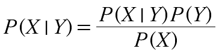
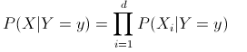

In many applications the relationship betweeen the attribute set and the class variable is non-deterministic. In oter words, the class label of a test record cannot be predicted with certainty. In these situation the Bayesian classification works well. The Bayes Theorem, is a statistical principle for combining prior knowledge of the classes with new evidence gathered from data.
For two events A and B, P(A|B) is the probablitly of A given B. So the probablity of A happening if B happend.
The way that the Bayes Theorem translates to a calssification algorithm is to replace B with a class label, and A with a attribute set. This creates a class-conditional probablity that shows the probability that a data object is in class Y given the attribute set X. This probablity is unknown for real-world classification problems, so the goal of the Naive Bayes Calssifiers is to estimate form the test data.

* Needs small amounts of Training Data to estimate the parameters
* Answers will be consistent
* Not really susesptible to noise
* Simple to interpret
* Doesn't need stopping rules
* Elimination of Noise is straight forward
* It requires us to specify a prio distribution for a ll unknonw parameters.
* Cannot change depending on new data, likelyhood is used